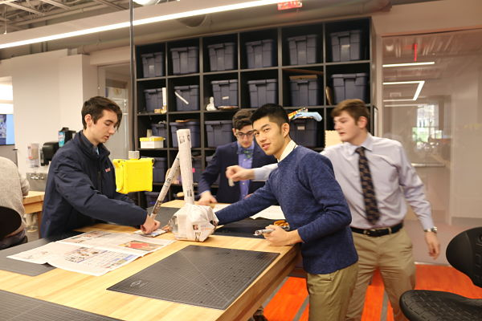
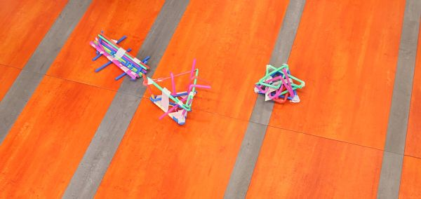

In this rotation, we learned the basics of HTML and participated in two class challenges. In the first challenge, each team had to build a stucture out of newspaper that could withstand being put in front of a fan. In the end, we constructed a newspaper cylinder that had another cylinder in the back supporting it. I suggested that we put flat squares of newspaper beneath each section of the newspaper for extra weight and support. Our structed ending up holding together, but we got third place because two other teams had taller structures.
In the second challenge, our team had to build a structure out of straws that could catch a golf ball falling from a height of three feet. We originally planned to build a structure with three legs to support it. We ended up constructed a small but elaborate structure of interwoven straws, and I suggested that we construct a triangular base (ours is the structure furthest to the right). When we tested it however, our structure was unable to catch the golfball and it bounced right out. It was a difficult challenge, as no other team was able to succeed.
